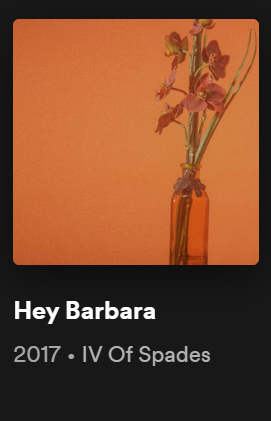
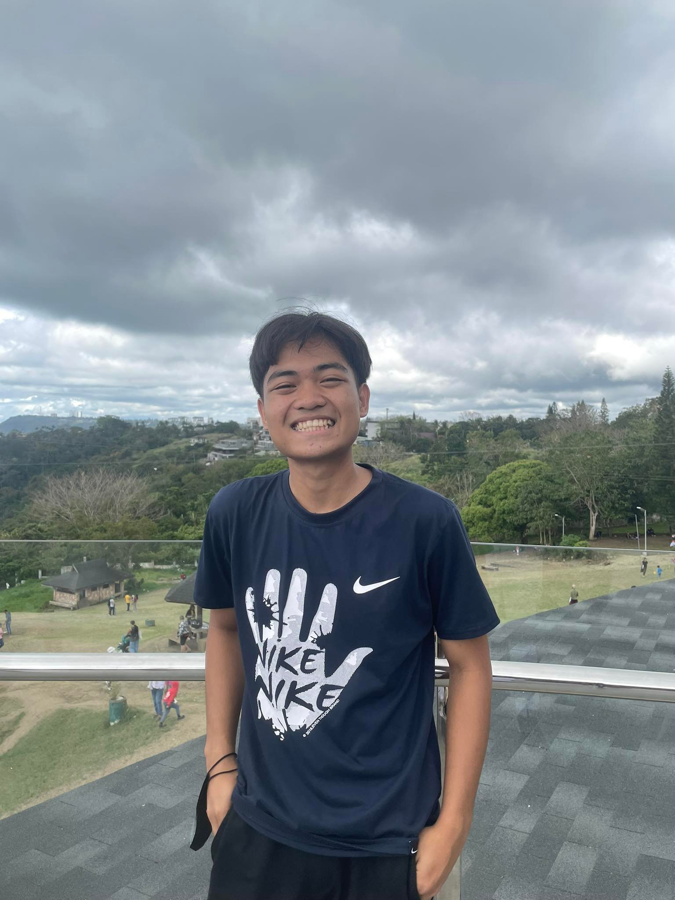

Favorite Song
Favorite Game


Kelvin P. Ignacio
kelvin.ignacio@adamson.edu.ph
09954851003
Hello! I am Kelvin P. Ignacio, 18 years old, and lives in Cavite City. I aspire to be a software engineer who works in back end projects.
Currently taking Bachelor of Science in Computer Science in Adamson University as a 1st year student.
I am a person who loves helping and bring fun to the people I'm with. I'm here in Manila to get out of my comfort zone and be the best version of myself.
> Won 1st Place in Scriptwriting – Radio Broadcasting (English) in Division Schools Press Conference (2016)
> Graduated with Honors in Ladislao Diwa Elementary School (2017)
> Graduated with High Honors in Cavite National High School (2021)
> Graduated with High Honors in Cavite National High School – Senior High under the Science, Techonology, Engineering, and Mathematics strand (2023)
> Awarded with Best in Research (2023)
"He is a hardworking student that aims to top every field he's into. Perseverance, competency, and being sociable are some examples of the characteristics he possesses." - Alma
"He is very cooperative." - Conrado
"A helping hand for those whoever needs help." - Neil
"Someone you can rely on. - Ethan